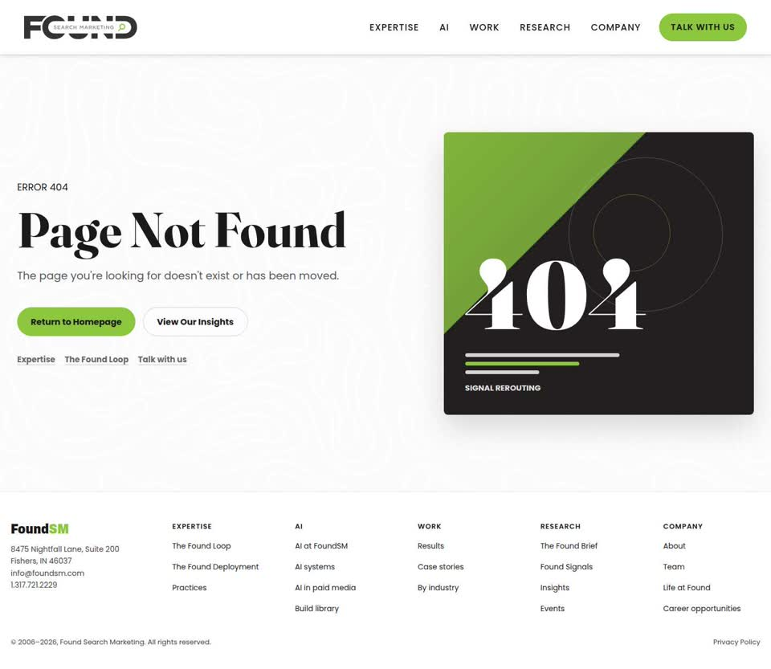
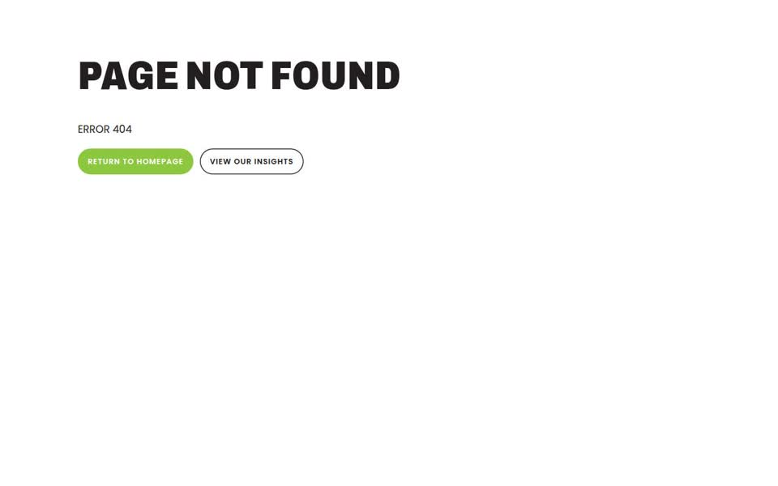
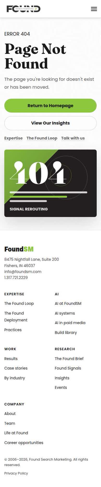

Utility · small
Restyle the 404 page with the 2026 type system. Keep the heading, the explanation, and every link.
https://staging.foundsm.com/this-route-should-404-proposal-check/ · Sanity notFoundPage (not in the staging dataset; page uses the code default) · robots stay noindex, follow
notFoundPage (not in the staging dataset; page uses the code default)
noindex, follow



No wording change. Found is not renamed.
10 of 10 items kept. Reworded items are still on the page. Open the list to see each one.